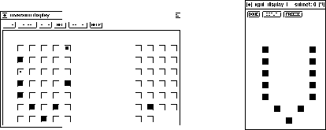

The inversion display may be called before or after the network has been trained. A pattern file for the network has to be loaded prior to calling the inversion. A target output of the network is defined by selecting one or more units in the 2D--display by clicking the middle mouse button. After setting the variables in the setup window, the inversion run is started by clicking the start button. At regular intervals, the inversion gives a status report on the shell window, where the progress of the algorithm can be observed. When there are no more error units, the program terminates and the calculated input pattern is displayed. If the algorithm does not converge, the run can be interrupted with the stop button and the variables may be changed. The calculated pattern can be tested for correctness by selecting all input units in the 2D--display and then deselecting them immediately again. This copies the activation of the units to the display. It can then be defined and tested with the usual buttons in the control panel. The user is advised to delete the generated pattern, since its use in subsequent learning cycles alters the behavior of the network which is generally not desirable.
Figure  shows an example of a generated input pattern (left).
Here the minimum active units for recognition of the letter 'V' are
given. The corresponding original pattern is shown on the right.
shows an example of a generated input pattern (left).
Here the minimum active units for recognition of the letter 'V' are
given. The corresponding original pattern is shown on the right.
